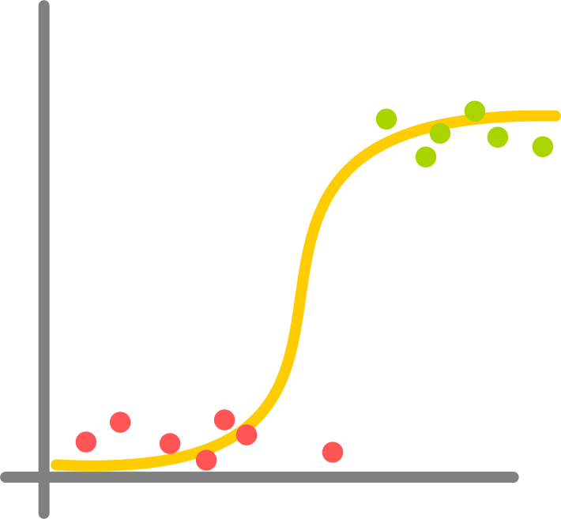
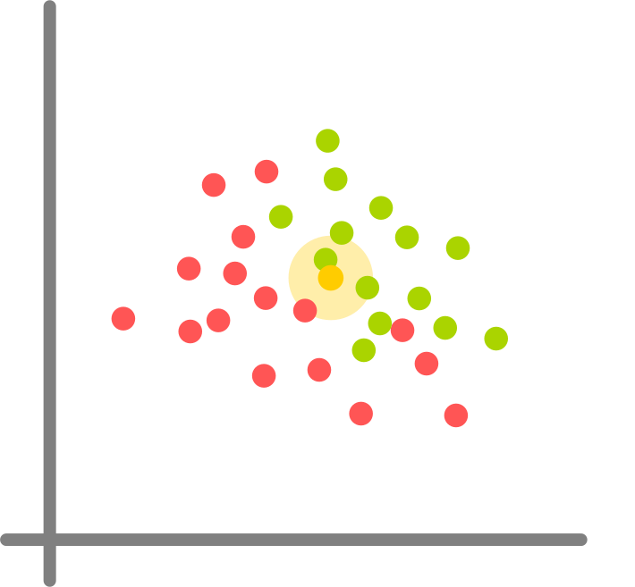
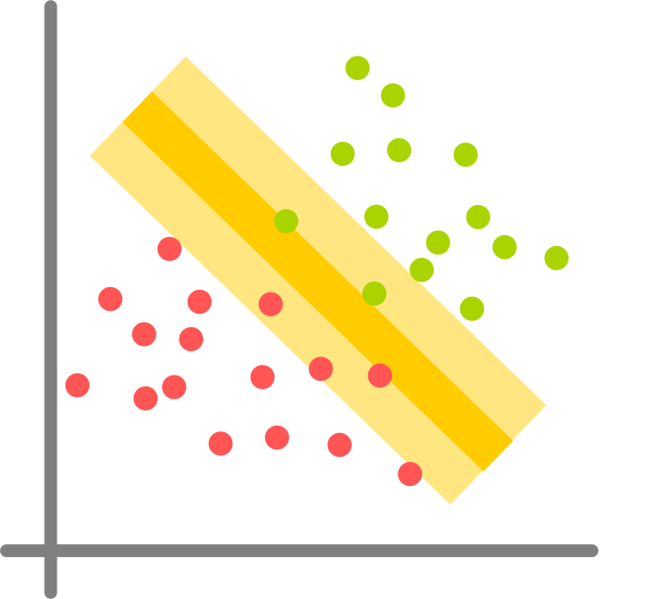
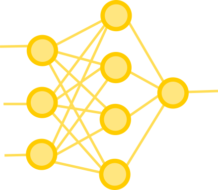

Algoritmos de Clasificación: qué y cuándo
Juan Pedro Fisanotti
Objetivos
Llevarse una idea de:
- qué cosas afectan a la decisión de los algoritmos
- en qué casos conviene usar o no usar los algoritmos comunes
Lo que vamos a ver
Algoritmos
- Logistic Regression
- K Nearest Neighbors
- Support Vector Machines (con kernels no lineales)
- Naive Bayes
- Decission Trees
- Random Forests
- Gradient Boosting (con decision trees)
- Neural Networks
Criterios ...
... sobre el algoritmo
- Uso de recursos en train y predict
- Flexibilidad de tiempo de train? (regulable, online train)
- Paramétrico?
- Garantiza convergencia?
- Cantidad de parámetros a tunear
- Parte de sklearn?
... sobre su relación con los datos
- Multiclase nativo?
- Cosas no linealmente separables?
- Data desparramada en gran dimensionalidad?
- Features que tienen o son ruido?
- Sabe estimar probabilidad de acierto?
- Da un score que sirva como medida de "confianza" de la predicción?
Logistic Regression
- Nada de recursos en train y predict
- No podemos regular tiempo de train, ni hacer online training
- Paramétrico
- Garantiza convergencia
- Nada para tunear
- En sklearn
- No nativo, pero multiclase haciendo cosas baratas
- Solo para datos linealmente separables
- Ok con data muy desparramada en gran dimensionalidad
- Menos suceptible a features ruidosas
- No da "probabilidad" posta, pero se parece
- El output es muy buen score
K Nearest Neighbors
- Nada de recursos en train (o sí si indexo)
- Muchos de recursos en predict (aliviano indexando)
- Tiempo de train (indices) regulable, podemos hacer online training
- No paramétrico!
- Convergencia: no aplica
- Poco para tunear
- En sklearn
- Multiclase nativo
- Se banca cosas no linealmente separables
- Problemas con data muy desparramada en muchas dimensiones
- Suceptible a features ruidosas
- Nada de probabilidad
- Score muy escalonado
SVM (kernels no lineales)
- Aceptable uso de recursos en train y en predict
- No podemos regular tiempo de train, ni hacer online training
- Paramétrico
- Garantiza convergencia
- No mucho para tunear
- En sklearn
- Multiclase no nativo
- Se banca cosas no linealmente separables (con kernels no lineales)
- Problemas con data muy desparramada en muchas dimensiones
- Suceptible a features ruidosas
- Nada de probabilidad
- Buen score
Naive Bayes
- Nada de recursos en train y en predict
- No podemos regular tiempo de train, ni hacer online training
- Paramétrico
- Garantiza convergencia
- Prácticamente nada para tunear
- En sklearn
- Multiclase nativo
- Se banca cosas no linealmente separables
- Funciona bien con data muy desparramada en muchas dimensiones
- Suceptible a features ruidosas
- Probabilidad? Sí, no, depende de asunciones y realidad de la data
- Buen score
Decission Trees
- Puede que requieran bastante ram en train
- Nada de recursos en predict
- No podemos regular tiempo de train, ni hacer online training
- Paramétrico
- Garantiza convergencia
- Poco para tunear
- En sklearn
- Multiclase nativo
- Se banca cosas no linealmente separables
- Problemas con data muy desparramada en muchas dimensiones (ram!!)
- Suceptible a features ruidosas
- Nada de probabilidad ni score
Random forests

- Similar a decision trees, posibles temas de ram
- Nada de recursos en predict
- No podemos hacer online training
- Tiempo de train regulable de acuerdo a cantidad/tamaño de árboles
- Paramétrico
- Garantiza convergencia-ish
- Un poco más para tunear, pero no grave
- En sklearn
- Multiclase nativo
- Se banca cosas no linealmente separables
- Problemas con data muy desparramada en dimensiones, pero menos que decision trees a secas
- Suceptible a features ruidosas
- Nada de probabilidad
- Da un score
Gradient boosted decision trees
- Similar a decision trees, posibles temas de ram (más si es multiclase)
- Nada de recursos en predict
- No podemos hacer online training
- Tiempo de train regulable-ish de acuerdo a cantidad de árboles (solo un poco)
- Paramétrico
- Garantiza convergencia
- Un poco más para tunear, pero no grave
- En sklearn
- Multiclase pero en scikit eso usa mucha ram (1 árbol por feature)
- Se banca cosas no linealmente separables
- Problemas con data muy desparramada en dimensiones
- Suceptible a features ruidosas
- Nada de probabilidad
- Da un score
Neural Networks
- Muchos recursos (ram y cpu/gpu) en train
- Recursos en predict pueden llegar a ser un tema también, por más que es mucho menos
- Podemos hacer online training
- Tiempo de train regulable
- Paramétrico
- No garantiza convergencia
- Banda de cosas para tunear, complejas y poco predecibles
- Nada en sklearn, hay que integrar con otras libs
- Multiclase nativo
- Se banca cosas no linealmente separables
- Problemas con data muy desparramada en dimensiones (ram)
- Suceptible a features ruidosas (especial capacidad de overfitting)
- Probabilidad sería terriblemente complejo de tener
- Da un buen score